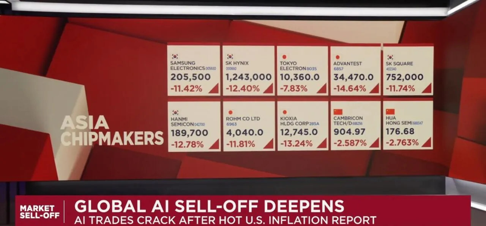
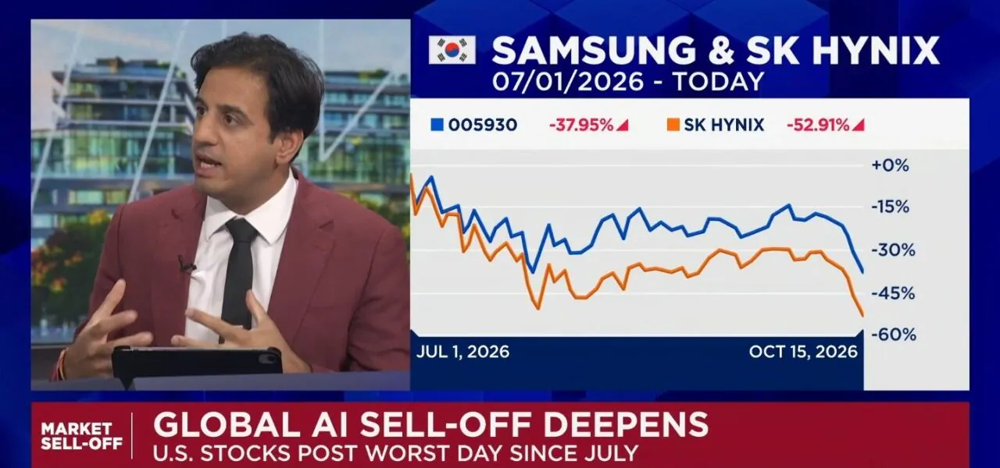
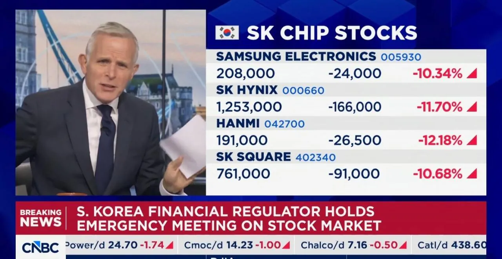

외신 앵커가 대놓고 조롱한 실제 발언ㅋㅋㅋ
한국 증시 -9% 가까이 박살 나니까 금융당국 긴급회의 소집.
과도한 신용융자 자제하고 투자자 보호하라고 지시함.
그 소식 듣자마자 CNBC 진행자 입에서 나온 말ㅋㅋㅋ
"Shutting the stable door after the horse has bolted."
"말이 이미 도망갔는데 이제 와서 마구간 문을 닫고 있네?"
"Where were you when the South Korean investors were leveraging up like you've never seen before?"
"한국 투자자들이 전례 없이 미친 듯이 레버리지 끌어다 쓰고 있을 때 당신들은 대체 어디 있었냐?"
"Where were you when they were investing on those two stocks?"
"그 사람들이 삼성전자랑 SK하이닉스에 돈 쏟아붓고 있을 때는 어디 있었는데?"
"You should have done this months ago anyway."
"애초에 이런 조치는 몇 달 전에 했어야지."
"And that's nuts as well, by the way."
"근데 그것도 진짜 말도 안 되는 짓이야."
글로벌 개쪽중...

그니까 지금 떡락한게 정작 레버리지 규제 들어가고 나서 떡락한거 아니냐고